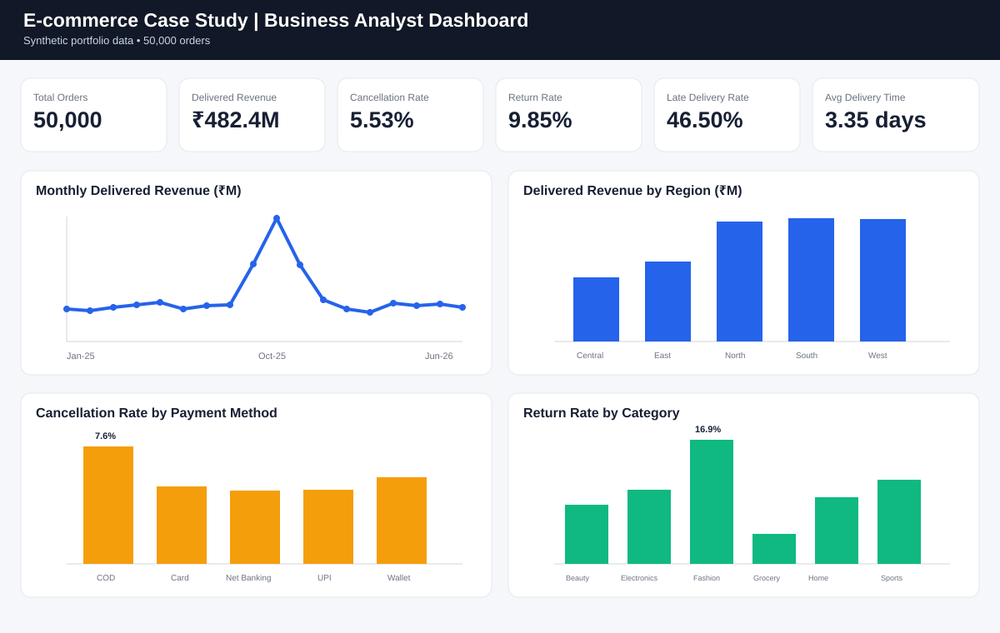

Project overview
Business problem
Identify the main causes of cancellations, late deliveries, returns, and refund leakage in the order-to-delivery journey.
Business analysis
Defined scope, stakeholders, BRD requirements, AS-IS/TO-BE flows, user stories, acceptance criteria, UAT, and RTM.
Dashboard & insights
Built KPI views covering revenue, cancellation, returns, delivery performance, regions, categories, and payment methods.
Main KPIs
Total Orders
50,000
Delivered Revenue
₹482.4M
Cancellation Rate
5.53%
Return Rate
9.85%
Late Delivery Rate
46.50%
Avg Delivery Time
3.35 days
Project documents
Business Requirements Document (BRD)Business problem, scope, stakeholders, requirements, KPIs, and success criteria.
Functional Requirements (FRD)Functional and non-functional requirements supporting the future-state solution.
AS-IS / TO-BE Process MapsCurrent and proposed order-to-delivery process flows.
User Stories & Acceptance CriteriaAgile requirements for key business and operational needs.
User Acceptance Testing (UAT)Business test scenarios used to validate requirements and KPI behaviour.
Requirements Traceability Matrix (RTM)Traceability from business requirements through functional requirements and testing.
Dashboard preview

Key findings
COD cancellations
COD orders showed a higher cancellation rate than UPI, highlighting an opportunity for targeted reconfirmation.
Fulfillment delays
Cross-region fulfillment performed worse than same-region fulfillment, supporting improved warehouse-routing rules.
Returns
Fashion had the highest return rate, indicating the need for category-level return-reason monitoring and feedback.
Tools & skills
Business Requirements • BRD • FRD • Stakeholder Analysis • AS-IS/TO-BE • User Stories • Acceptance Criteria • UAT • RTM • KPI Analysis • Dashboarding • Supporting SQL / SQLite